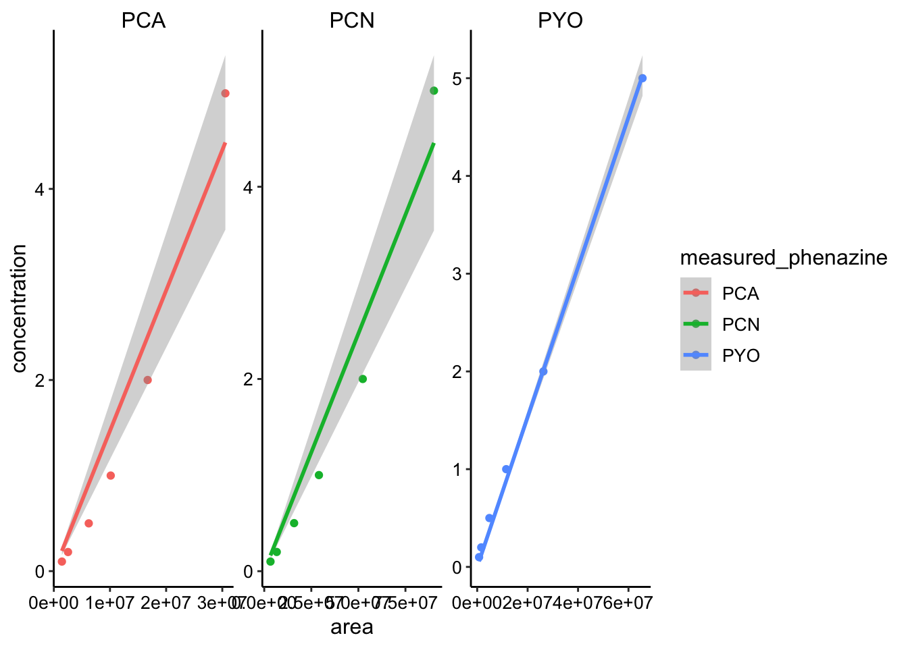
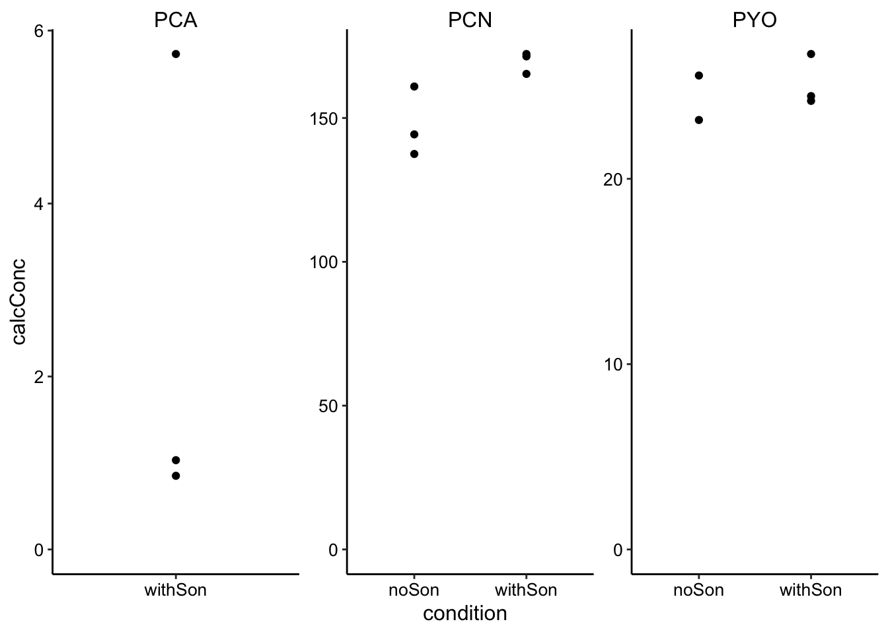
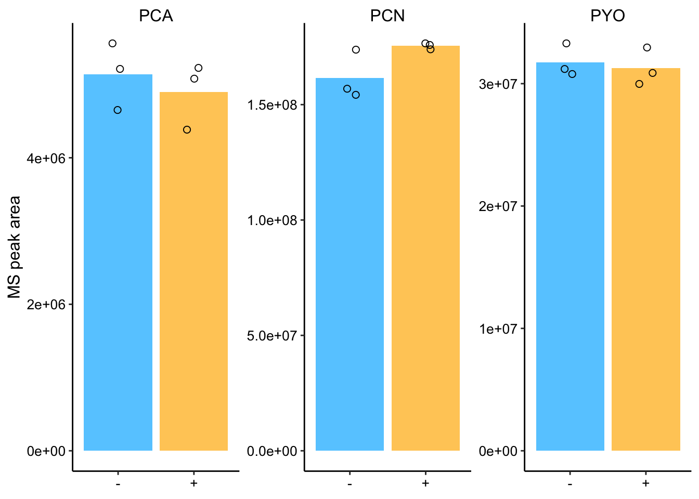
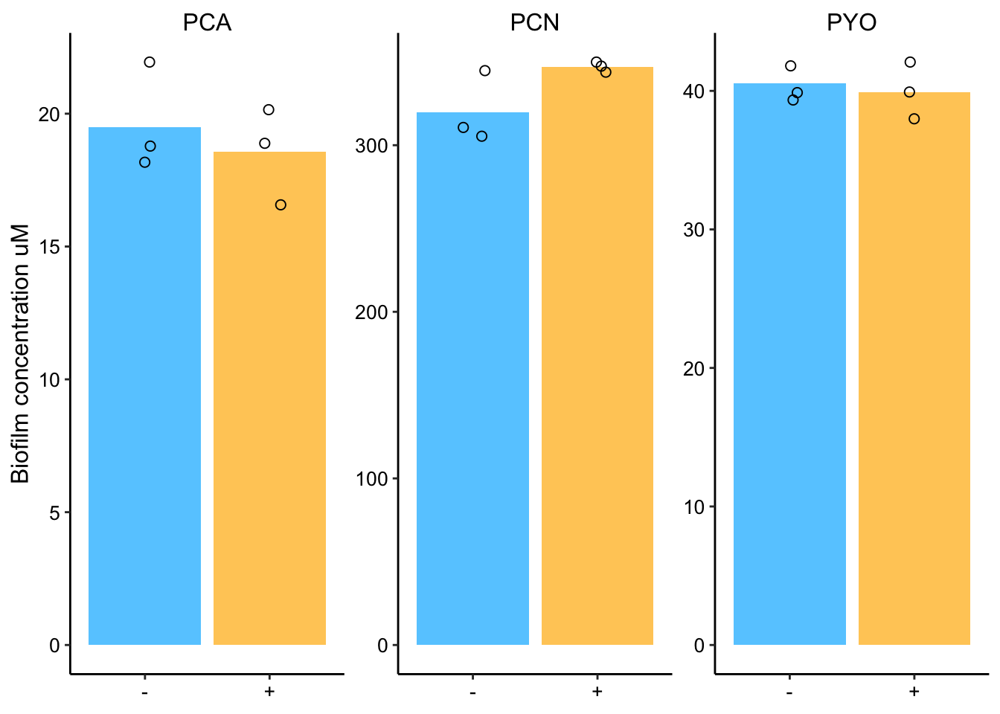
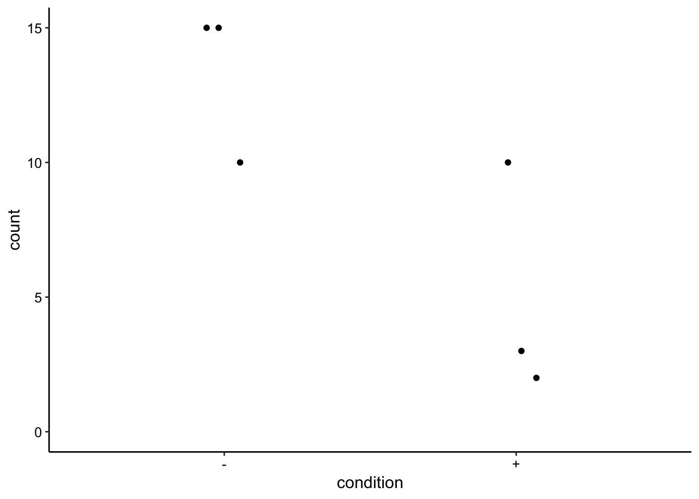
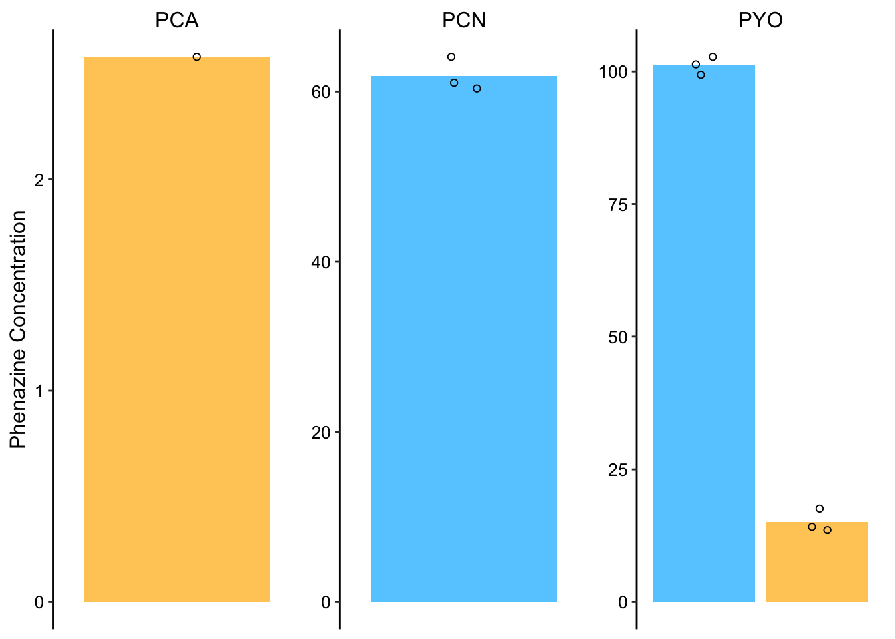
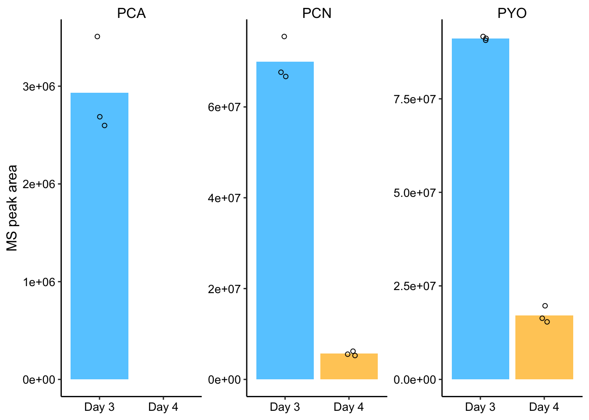
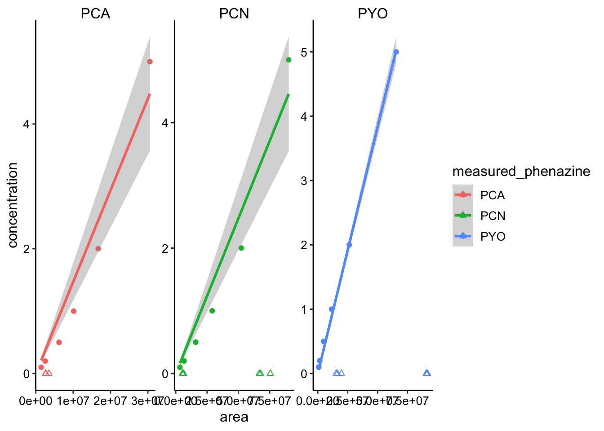
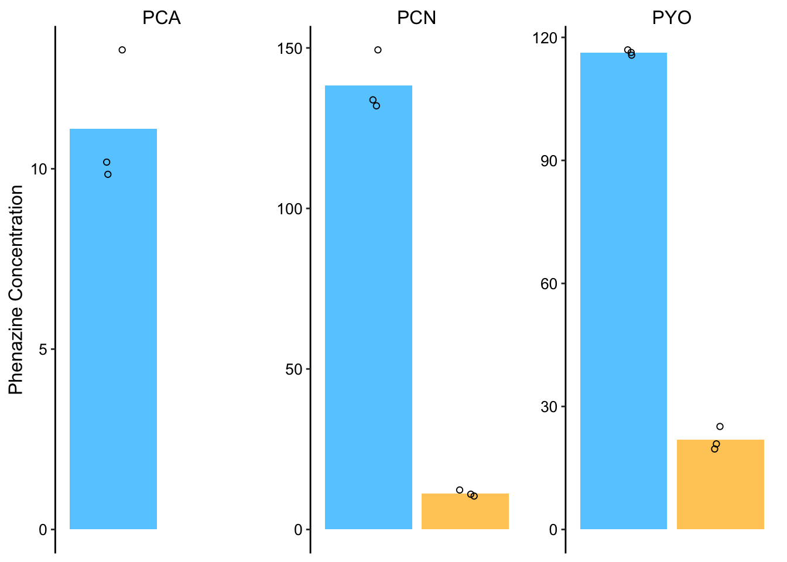

SI: LC-MS Controls
03_11_19
library(tidyverse)
library(cowplot)
library(viridis)
library(knitr)
library(kableExtra)
library(patchwork)
library(tidyr)
library(broom)
knitr::opts_chunk$set(tidy.opts=list(width.cutoff=60),tidy=TRUE, echo = TRUE, message=FALSE, warning=FALSE, fig.align="center")
source("../../../IDA/tools/echem_processing_tools.R")
source("../../../IDA/tools/plotting_tools.R")
theme_set(theme_1())This notebook contains the plots for figure S1, which includes controls and extra information about the LC-MS colony extractions. Specifically the data are for: * WT +/- sonication control * dPHZ* phenazine retention * WT no membrane control
For the first two the concentrations were quite low, so leading the PDA to miss some of the quantifications. Therefore I decided to use MS (QDA) channels to quantify these sample peaks.
MS standard curves
In order to use the MS for quantification, let’s first see how well we can calibrate from peak area to concentration. This works very well for peaks in uv-vis, but anecdotally MS does not work as well.
I manually quantified the peaks for the standard curve run on 8/29/18 for each of the phenazines in their respective mass channels (PCA = 225, PCN = 224, PYO = 211 approximately). Here’s the data:
std_PCA <- c(1438945, 2524756, 6219139, 10130937, 16712822, 30545647,
45106329)
std_PYO <- c(743240, 1604480, 4839401, 11509642, 26253622, 65574941,
113804512)
std_PCN <- c(3319415, 6644637, 15856302, 29044060, 52325756,
90144409, 135780468)
phz_stds <- tibble(measured_phenazine = c(rep("PCA", 7), rep("PYO",
7), rep("PCN", 7)), concentration = rep(c(0.1, 0.2, 0.5,
1, 2, 5, 10), 3), area = c(std_PCA, std_PYO, std_PCN), )
head(phz_stds)## # A tibble: 6 x 3
## measured_phenazine concentration area
## <chr> <dbl> <dbl>
## 1 PCA 0.1 1438945
## 2 PCA 0.2 2524756
## 3 PCA 0.5 6219139
## 4 PCA 1 10130937
## 5 PCA 2 16712822
## 6 PCA 5 30545647Let’s see how the curves look.
ggplot(phz_stds %>% filter(concentration < 10), aes(x = area,
y = concentration, color = measured_phenazine)) + geom_point() +
geom_smooth(method = "lm", formula = y ~ x + 0) + facet_wrap(~measured_phenazine,
scales = "free") Here I already excluded all the standards above 10uM, because I assumed the MS would saturate. You can see that the curves definitely increase, but they are not super nice calibration curves (except PYO is pretty good). Well let’s move forward, but we’ll make sure to look at the raw peak area for each of the plots before we calibrate into concentrations.
We can simply fit the linear model to this data, and because we force the fit through zero we can use the slopes to calibrate.
std_slopes <- phz_stds %>% filter(concentration < 10) %>% group_by(measured_phenazine) %>%
do(tidy(lm(concentration ~ area + 0, data = .)))
std_slopes## # A tibble: 3 x 6
## # Groups: measured_phenazine [3]
## measured_phenazine term estimate std.error statistic p.value
## <chr> <chr> <dbl> <dbl> <dbl> <dbl>
## 1 PCA area 0.000000147 0.0000000116 12.6 5.53e-5
## 2 PCN area 0.0000000494 0.00000000394 12.6 5.68e-5
## 3 PYO area 0.0000000767 0.00000000123 62.2 2.04e-8So now we can just multiply our peak areas by the estimate for the slope.
WT +/- sonication
So let’s start with the PDA data for the colonies +/- sonication. Hopefully you can see why I had to move to the MS channels.
son_data <- read_csv("../data/06_24_18_HPLC_pda_WTcolony_sonication.csv") %>%
mutate(calcConc = Amount * 2 * (800/62))
ggplot(son_data, aes(x = condition, y = calcConc)) + geom_point() +
facet_wrap(~measured_phenazine, scales = "free") + ylim(0,
NA) It looks reasonable, but we are missing PCA and 1 of the PYO data points.
These peaks are clearly visible in the MS channels, so I decided to go back and requantify using the MS channels.
Here are the manually quantified MS peaks:
PCA = c(5079971, 4383790, 5226988, 5561765, 5213071, 4652306)
PYO = c(32954513, 30874145, 29976749, 33291160, 31197443, 30785841)
PCN = c(175851779, 173966518, 176536668, 173807308, 156877918,
154243451)
son_data_ms <- tibble(measured_phenazine = c(rep("PCA", 6), rep("PYO",
6), rep("PCN", 6)), condition = rep(c(rep("withSon", 3),
rep("noSon", 3)), 3), rep = rep(c(1, 2, 3), 6), Area = c(PCA,
PYO, PCN)) %>% group_by(condition, measured_phenazine) %>%
mutate(mean = ifelse(rep == 1, mean(Area), NA))
# Plot layout
plot_ms_son <- ggplot(son_data_ms, aes(x = condition, y = Area)) +
geom_col(aes(y = mean, fill = condition)) + geom_jitter(shape = 21,
size = 2, height = 1, width = 0.1) + facet_wrap(~measured_phenazine,
scales = "free") + ylim(0, NA)
# Plot styling
plot_ms_son_styled <- plot_ms_son + labs(x = NULL, y = "MS peak area") +
theme(axis.title.x = element_text(size = 14)) + scale_fill_manual(guide = F,
values = c("#66CCFF", "#FFCC66")) + scale_x_discrete(breaks = c("noSon",
"withSon"), labels = c("-", "+"))
plot_ms_son_styled
Ok, so the values look pretty consistent among replicates and there are no obvious differences between sonicated and normal samples!
Here’s a quick t-test:
son_data_ms %>% spread(condition, Area) %>% group_by(measured_phenazine) %>%
summarise(conf_int_low = t.test(noSon, withSon, alternative = "less")$conf.int[1],
conf_int_high = t.test(noSon, withSon, alternative = "less")$conf.int[2],
p_value = t.test(noSon, withSon, alternative = "less")$p.value)## # A tibble: 3 x 4
## measured_phenazine conf_int_low conf_int_high p_value
## <chr> <dbl> <dbl> <dbl>
## 1 PCA -Inf 1036918. 0.728
## 2 PCN -Inf 3860322. 0.0755
## 3 PYO -Inf 3005305. 0.651The t.test indicates that none of the differences are signficant p<0.05. There might be a small difference for PCN, but it is not clear.
Just for completeness, let’s calculate the concentrations for these colonies. Look up the dilution for these colonies - was it 1mL or 800uL? did I dilute by 2x?
son_data_ms_cal <- son_data_ms %>%
mutate(concentration = case_when(
measured_phenazine == 'PCA' ~ Area*std_slopes$estimate[1],
measured_phenazine == 'PYO' ~ Area*std_slopes$estimate[2],
measured_phenazine == 'PCN' ~ Area*std_slopes$estimate[3]
)) %>%
mutate(calcConc = concentration*2*(800 / 62)) %>% #Dilution factor
group_by(measured_phenazine, condition) %>%
mutate(mean = ifelse(rep=='1',mean(calcConc),NA))
# Plot layout
plot_ms_son_cal <- ggplot(son_data_ms_cal, aes(x = condition, y = calcConc)) +
geom_col(aes(y = mean, fill = condition))+
geom_jitter(shape = 21, size = 2, height = 1, width = 0.1) +
facet_wrap(~measured_phenazine, scales = 'free') +
ylim(0,NA)
#Plot styling
plot_ms_son_cal_styled <- plot_ms_son_cal +
labs(x = NULL, y = "Biofilm concentration uM") +
theme(axis.title.x = element_text(size = 14)) +
scale_fill_manual(guide = F, values = c("#66CCFF","#FFCC66")) +
scale_x_discrete(breaks = c('noSon','withSon'),
labels=c("-","+"))
plot_ms_son_cal_styled  Ok, so no matter how we look at it there doesn’t seem to be a real difference.
Can we see evidence that the sonication actually lysed a bunch of the cells? CFU counts were plated for all these colonies, so that should clarify.
cfu_data <- tibble(condition = c(rep("+", 3), rep("-", 3)), count = c(2,
3, 10, 15, 15, 10))
ggplot(cfu_data, aes(x = condition, y = count)) + geom_jitter(height = 0,
width = 0.1) + ylim(0, NA)
# t.test(c(2,3,10), c(15,15,10), alternative = 'less')This difference doesn’t look super convincing, but at the 10^-5 dilution all of the sonicated samples look to have clearly fewer colonies, however the colonies grew together so it is difficult to count. Also, the biofilms could have started with different numbers of cells…
Anyway, based on the means of 13 and 5, at least 50 percent of the cells were lysed and it was likely more like 80%. With that difference in lysis, I think we would have seen a difference in the extracts if there were truly some large intracellular pool of phenazines (that was still there and not already secreted when we lysed).
dPHZstar phenazine retention
Ok, so now let’s quantify the dPHZstar retention in the same way. First, here’s the PDA data:
pda_data <- read_csv("../data/dPHZstar_PDA_PHZretention_08_29_18.csv") %>%
mutate(calcConc = Amount * 2 * (800/62)) %>% group_by(Name,
Day, Phenazine) %>% mutate(mean = ifelse(Rep == 1, mean(calcConc),
NA))
dphz_ret_pda_plot <- ggplot(pda_data %>% filter(Phenazine ==
"PHZ"), aes(x = Day, y = calcConc, )) + geom_col(aes(y = mean,
fill = Day)) + geom_jitter(height = 0, width = 0.1, shape = 21) +
facet_wrap(~Name, scales = "free") + ylim(0, NA)
# Plot styling
dphz_ret_pda_plot_styled <- dphz_ret_pda_plot + labs(x = NULL,
y = "Phenazine Concentration") + theme(axis.title.x = element_text(size = 14)) +
scale_fill_manual(guide = F, values = c("#66CCFF", "#FFCC66")) +
scale_x_discrete(breaks = c("3", "4"), labels = c("Day 3",
"Day 4"))
dphz_ret_pda_plot_styled So here it’s obvious why we need to go to the MS channel. We really want to get values for both Day 3 and 4, and we only get that for PYO.
So here’s the manually quantified MS peaks:
day3 <- c(2597946, 3508218, 2687107, 90652840, 91660115, 91168200,
66702800, 67639961, 75507519)
day4 <- c(NA, NA, NA, 15384042, 16353567, 19682638, 5261483,
6216937, 5551978)
dphz_col_data <- tibble(measured_phenazine = rep(c(rep("PCA",
3), rep("PYO", 3), rep("PCN", 3)), 2), rep = rep(c(1, 2,
3), 6), day = c(rep("D3", 9), rep("D4", 9)), area = c(day3,
day4)) %>% group_by(measured_phenazine, day) %>% mutate(mean = ifelse(rep ==
"1", mean(area), NA))
dphz_ret_area_plot <- ggplot(dphz_col_data, aes(x = day, y = area,
)) + geom_col(aes(y = mean, fill = day)) + geom_jitter(height = 0,
width = 0.1, shape = 21) + facet_wrap(~measured_phenazine,
scales = "free") + ylim(0, NA)
# Plot styling
dphz_ret_area_plot_styled <- dphz_ret_area_plot + labs(x = NULL,
y = "MS peak area") + theme(axis.title.x = element_text(size = 14)) +
scale_fill_manual(guide = F, values = c("#66CCFF", "#FFCC66")) +
scale_x_discrete(breaks = c("D3", "D4"), labels = c("Day 3",
"Day 4"))
dphz_ret_area_plot_styled Ok, so now this is much more convincing. We can see PCN and PYO peaks on Day 3 and Day 4 and we can see PCA peaks on day 3 (when concentrations are higher). It looks to me like PYO is retained more than PCN and PCA. Let’s look at the percentage of phenazine retained (based on means).
dphz_col_data %>% group_by(measured_phenazine, day) %>% summarise(mean = mean(area)) %>%
spread(day, mean) %>% mutate(percent_remaining = D4/D3)## # A tibble: 3 x 4
## # Groups: measured_phenazine [3]
## measured_phenazine D3 D4 percent_remaining
## <chr> <dbl> <dbl> <dbl>
## 1 PCA 2931090. NA NA
## 2 PCN 69950093. 5676799. 0.0812
## 3 PYO 91160385 17140082. 0.188So about 19% of PYO is retained, about 8% of PCN is retained and an undetectable amount of PCA is retained after 24hrs.
Let’s try to calibrate for concentration. This is how the measurements fall on the calibration curve:
ggplot(phz_stds %>% filter(concentration < 10), aes(x = area,
y = concentration, color = measured_phenazine)) + geom_point() +
geom_smooth(method = "lm", formula = y ~ x + 0) + geom_point(data = dphz_col_data,
aes(y = 0), shape = 2) + facet_wrap(~measured_phenazine,
scales = "free") Not perfect, but let’s move forward.
dphz_col_cal_data <- dphz_col_data %>% mutate(concentration = case_when(measured_phenazine ==
"PCA" ~ area * std_slopes$estimate[1], measured_phenazine ==
"PYO" ~ area * std_slopes$estimate[2], measured_phenazine ==
"PCN" ~ area * std_slopes$estimate[3])) %>% mutate(calcConc = concentration *
2 * (800/62)) %>% group_by(measured_phenazine, day) %>% mutate(mean = ifelse(rep ==
"1", mean(calcConc), NA))
dphz_ret_conc_plot <- ggplot(dphz_col_cal_data, aes(x = day,
y = calcConc, )) + geom_col(aes(y = mean, fill = day)) +
geom_jitter(height = 0, width = 0.1, shape = 21) + facet_wrap(~measured_phenazine,
scales = "free") + ylim(0, NA)
# Plot styling
dphz_ret_conc_plot_styled <- dphz_ret_conc_plot + labs(x = NULL,
y = "Phenazine Concentration") + theme(axis.title.x = element_text(size = 14)) +
scale_fill_manual(guide = F, values = c("#66CCFF", "#FFCC66")) +
scale_x_discrete(breaks = c("3", "4"), labels = c("Day 3",
"Day 4"))
dphz_ret_conc_plot_styled If you compare to the PDA quantifications above, PYO looks spot on, PCN looks off and PCA we don’t know how close.
I’m going to go back and manually integrate the PCN peaks from the PDA. Otherwise I think we should just stick with the MS peak area quantifications.
For the record here’s the QDA chromatograms for PCA showing that it is indeed undetectable on Day 4 in the colony.
This is for the samples discussed above that were incubated with all 3 phenazines at once.
knitr::include_graphics("../data/dPHZ_retention_PHZ_QDA_chromatogram.png")
This was for colonies that were incubated with just PCA at a higher concentration.
knitr::include_graphics("../data/dPHZ_retention_PCA_QDA_chromatogram.png")
In both cases the peaks are only visible on day 3. At day 4 both chromatograms show baseline.